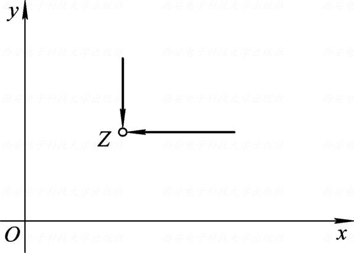

Taotao Wang, Associate Professor
College of Electronics and Information Engineering, Shenzhen University
Derivatives of Complex Functions
Definition of the Derivative
Let $\displaystyle w=f(z)$ be defined in a domain $\displaystyle D$, and let $\displaystyle z_0\in D$ and $\displaystyle z_0+\Delta z\in D$. If the limit \[\lim_{\Delta z\to 0}\frac{f(z_0+\Delta z)-f(z_0)}{\Delta z}\] exists (and is finite), then $\displaystyle f(z)$ is said to be differentiable（可导） at $\displaystyle z_0$.
This limit is called the derivative（导数） of $\displaystyle f(z)$ at $\displaystyle z_0$ and is denoted by \[f'(z_0)=\left.\frac{\mathrm{d}w}{\mathrm{d}z}\right|_{z=z_0}=\lim_{\Delta z\to 0}\frac{f(z_0+\Delta z)-f(z_0)}{\Delta z}. \tag{2.1.1}\] Equivalently, for every $\displaystyle \varepsilon>0$ there is a $\displaystyle \delta(\varepsilon)>0$ such that $\displaystyle 0<\abs{\Delta z}<\delta$ implies \[\abs{\frac{f(z_0+\Delta z)-f(z_0)}{\Delta z}-f'(z_0)}<\varepsilon.\] As for limits in Chapter 1, $\displaystyle \Delta z\to0$ may happen along any path.
Determine whether the following functions are differentiable:
$\displaystyle f(z)=z^2$;
$\displaystyle f(z)=2x+yi$.
For every $\displaystyle z$ in the complex plane, \[\begin{aligned} \lim_{\Delta z\to 0}\frac{f(z+\Delta z)-f(z)}{\Delta z} & =\lim_{\Delta z\to 0}\frac{(z+\Delta z)^2-z^2}{\Delta z} \\ & =\lim_{\Delta z\to 0}(2z+\Delta z)=2z. \end{aligned}\] Hence $\displaystyle f(z)=z^2$ is differentiable everywhere, and $\displaystyle f'(z)=2z$.
With $\displaystyle \Delta z=\Delta x+i\Delta y$, \[\begin{aligned} \frac{f(z+\Delta z)-f(z)}{\Delta z} & =\frac{2(x+\Delta x)+(y+\Delta y)i-(2x+yi)}{\Delta x+i\Delta y} \\ & =\frac{2\Delta x+i\Delta y}{\Delta x+i\Delta y}. \end{aligned}\] If $\displaystyle z+\Delta z\to z$ along a line parallel to the real axis (Figure 2.1), then $\displaystyle \Delta y=0$ and the quotient equals $\displaystyle \frac{2\Delta x}{\Delta x}=2$.
If $\displaystyle z+\Delta z\to z$ along a line parallel to the imaginary axis, then $\displaystyle \Delta x=0$ and the quotient equals $\displaystyle \frac{i\Delta y}{i\Delta y}=1$.
The two limits differ, so $\displaystyle f(z)=2x+yi$ is differentiable nowhere.

Differentiability and Continuity
Suppose $\displaystyle f(z)$ is differentiable at $\displaystyle z_0$. Let \[\rho(\Delta z)=\frac{f(z_0+\Delta z)-f(z_0)}{\Delta z}-f'(z_0). \tag{2.1.2}\] By the definition of the derivative, \[\lim_{\Delta z\to 0}\rho(\Delta z)=0.\]
From (2.1.2), \[f(z_0+\Delta z)=f(z_0)+f'(z_0)\Delta z+\rho(\Delta z)\Delta z, \tag{2.1.3}\] and therefore \[\lim_{\Delta z\to 0}f(z_0+\Delta z)=f(z_0).\] Thus, differentiability at $\displaystyle z_0$ implies continuity at $\displaystyle z_0$.
The converse is false: $\displaystyle f(z)=2x+yi$ is continuous everywhere but differentiable nowhere.
Rules of Differentiation
Complex derivatives obey the same rules as real derivatives:
$\displaystyle (c)'=0$, where $\displaystyle c$ is a complex constant;
$\displaystyle (z^n)'=nz^{n-1}$, where $\displaystyle n$ is a positive integer;
$\displaystyle [f(z)\pm g(z)]'=f'(z)\pm g'(z)$;
$\displaystyle [f(z)g(z)]'=f'(z)g(z)+f(z)g'(z)$;
$\displaystyle \left[\frac{f(z)}{g(z)}\right]'=\frac{f'(z)g(z)-f(z)g'(z)}{g^2(z)}$, where $\displaystyle g(z)\neq 0$;
$\displaystyle \{f[g(z)]\}'=f'(w)g'(z)$, where $\displaystyle w=g(z)$ (chain rule);
$\displaystyle f'(z)=\frac{1}{\varphi'(w)}$, where $\displaystyle w=f(z)$ and $\displaystyle z=\varphi(w)$ are mutually inverse single-valued functions and $\displaystyle \varphi'(w)\neq 0$.
Differential
As in real analysis, suppose $\displaystyle w=f(z)$ is differentiable at $\displaystyle z_0$. By (2.1.3), \[\Delta w=f(z_0+\Delta z)-f(z_0)=f'(z_0)\Delta z+\rho(\Delta z)\Delta z,\] where $\displaystyle \lim_{\Delta z\to 0}\rho(\Delta z)=0$. Hence $\displaystyle \rho(\Delta z)\Delta z$ is an infinitesimal of higher order than $\displaystyle \Delta z$, and $\displaystyle f'(z_0)\Delta z$ is the linear principal part of $\displaystyle \Delta w$.
The linear part $\displaystyle f'(z_0)\Delta z$ is called the differential（微分） of $\displaystyle w=f(z)$ at $\displaystyle z_0$: \[\mathrm{d}w=f'(z_0)\Delta z. \tag{2.1.4}\] For $\displaystyle f(z)=z$ we have $\displaystyle \mathrm{d}z=\Delta z$, so (2.1.4) becomes $\displaystyle \mathrm{d}w=f'(z_0)\,\mathrm{d}z$, that is, \[f'(z_0)=\left.\frac{\mathrm{d}w}{\mathrm{d}z}\right|_{z=z_0}. \tag{2.1.5}\] Thus, a function has a differential at $\displaystyle z_0$ if and only if it has a derivative at $\displaystyle z_0$. If $\displaystyle f(z)$ is differentiable at every point of a domain $\displaystyle D$, it is said to be differentiable in $\displaystyle D$.
Analytic Functions
If $\displaystyle f(z)$ is differentiable at $\displaystyle z_0$ and at every point of some neighborhood of $\displaystyle z_0$, then $\displaystyle f(z)$ is said to be analytic（解析） at $\displaystyle z_0$. If $\displaystyle f(z)$ is analytic at every point of a domain $\displaystyle D$, then $\displaystyle f(z)$ is said to be analytic in $\displaystyle D$, or an analytic function in $\displaystyle D$.
If $\displaystyle f(z)$ is not analytic at $\displaystyle z_0$, then $\displaystyle z_0$ is called a singular point（奇点） of $\displaystyle f(z)$.
Analyticity is a neighborhood property: differentiability at a single point is not enough.
Investigate the analyticity of the following functions:
$\displaystyle f(z)=z^2$;
$\displaystyle f(z)=2x+yi$;
$\displaystyle f(z)=\abs{z}^2$;
$\displaystyle f(z)=1/z$.
By Example 1.1, $\displaystyle f(z)=z^2$ is analytic in the whole plane, while $\displaystyle f(z)=2x+yi$ is analytic nowhere.
$\displaystyle f(z)=1/z$ is differentiable for $\displaystyle z\neq0$ with $\displaystyle f'(z)=-1/z^2$, so it is analytic in $\displaystyle \mathbb{C}\setminus\{0\}$, and $\displaystyle z=0$ is a singular point.
For $\displaystyle f(z)=\abs{z}^2=z\overline z$, \[\begin{aligned} \frac{f(z_0+\Delta z)-f(z_0)}{\Delta z} & =\frac{(z_0+\Delta z)(\overline{z_0}+\overline{\Delta z})-z_0\overline{z_0}}{\Delta z} \\ & =\overline{z_0}+\overline{\Delta z}+z_0\frac{\overline{\Delta z}}{\Delta z}. \end{aligned}\] If $\displaystyle z_0=0$, the quotient equals $\displaystyle \overline{\Delta z}\to0$, so $\displaystyle f'(0)=0$.
If $\displaystyle z_0\neq 0$, let $\displaystyle z_0+\Delta z\to z_0$ along the line $\displaystyle y-y_0=k(x-x_0)$. Then \[\frac{\overline{\Delta z}}{\Delta z}=\frac{\Delta x-i\Delta y}{\Delta x+i\Delta y}=\frac{1-ik}{1+ik},\] which depends on $\displaystyle k$, so the limit does not exist.
Therefore, $\displaystyle f(z)=\abs{z}^2$ is differentiable only at $\displaystyle z=0$ and is analytic nowhere.
If $\displaystyle f(z)$ and $\displaystyle g(z)$ are analytic in a domain $\displaystyle D$, then $\displaystyle f\pm g$, $\displaystyle fg$, and $\displaystyle f/g$ (where $\displaystyle g(z)\neq0$) are analytic in $\displaystyle D$.
Suppose $\displaystyle h=g(z)$ is analytic in a domain $\displaystyle D$ of the $\displaystyle z$-plane, $\displaystyle w=f(h)$ is analytic in a domain $\displaystyle G$ of the $\displaystyle h$-plane, and $\displaystyle g(z)\in G$ for every $\displaystyle z\in D$. Then the composite function $\displaystyle w=f[g(z)]$ is analytic in $\displaystyle D$.
Consequently, every polynomial is analytic in the whole plane, and every rational function $\displaystyle P(z)/Q(z)$ is analytic except at the zeros of $\displaystyle Q(z)$.
Main Theorem
Let $\displaystyle f(z)=u(x, y)+i v(x, y)$ be defined in a domain $\displaystyle D$. Then $\displaystyle f(z)$ is differentiable at a point $\displaystyle z=x+iy$ of $\displaystyle D$ if and only if $\displaystyle u(x, y)$ and $\displaystyle v(x, y)$ are differentiable at $\displaystyle (x, y)$ and satisfy the Cauchy--Riemann equations（柯西--黎曼方程） \[\frac{\partial u}{\partial x}=\frac{\partial v}{\partial y}, \qquad \frac{\partial u}{\partial y}=-\frac{\partial v}{\partial x}\] at this point.
Necessity. Suppose $\displaystyle f(z)$ is differentiable at $\displaystyle z=x+iy$. By (2.1.3), for small $\displaystyle \abs{\Delta z}=\abs{\Delta x+i\Delta y}>0$, \[f(z+\Delta z)-f(z)=f'(z)\Delta z+\rho(\Delta z)\Delta z,\] where $\displaystyle \lim_{\Delta z\to 0}\rho(\Delta z)=0$. Write \[f(z+\Delta z)-f(z)=\Delta u+i\Delta v,\quad f'(z)=a+ib,\quad \rho(\Delta z)=\rho_1+i\rho_2.\]
Then \[\begin{aligned} \Delta u+i\Delta v & =(a+ib)(\Delta x+i\Delta y)+(\rho_1+i\rho_2)(\Delta x+i\Delta y) \\ & =(a\Delta x-b\Delta y+\rho_1\Delta x-\rho_2\Delta y) \\ & \quad+i(b\Delta x+a\Delta y+\rho_2\Delta x+\rho_1\Delta y). \end{aligned}\] Comparing real and imaginary parts, \[\begin{aligned} \Delta u & =a\Delta x-b\Delta y+\rho_1\Delta x-\rho_2\Delta y, \\ \Delta v & =b\Delta x+a\Delta y+\rho_2\Delta x+\rho_1\Delta y. \end{aligned}\]
Since $\displaystyle \rho_1,\rho_2\to0$ as $\displaystyle (\Delta x,\Delta y)\to(0,0)$, $\displaystyle u$ and $\displaystyle v$ are differentiable at $\displaystyle (x,y)$, with \[\frac{\partial u}{\partial x}=a,\quad \frac{\partial u}{\partial y}=-b,\quad \frac{\partial v}{\partial x}=b,\quad \frac{\partial v}{\partial y}=a.\] Hence \[\frac{\partial u}{\partial x}=\frac{\partial v}{\partial y},\qquad \frac{\partial u}{\partial y}=-\frac{\partial v}{\partial x}.\]
Sufficiency. Suppose $\displaystyle u$ and $\displaystyle v$ are differentiable at $\displaystyle (x,y)$ and satisfy the Cauchy--Riemann equations. Write \[f(z+\Delta z)-f(z)=\Delta u+i\Delta v.\]
Differentiability of $\displaystyle u$ and $\displaystyle v$ gives \[\begin{aligned} \Delta u & =\frac{\partial u}{\partial x}\Delta x+\frac{\partial u}{\partial y}\Delta y+\varepsilon_1\Delta x+\varepsilon_2\Delta y, \\ \Delta v & =\frac{\partial v}{\partial x}\Delta x+\frac{\partial v}{\partial y}\Delta y+\varepsilon_3\Delta x+\varepsilon_4\Delta y, \end{aligned}\] where $\displaystyle \varepsilon_k\to0$ $\displaystyle (k=1,2,3,4)$ as $\displaystyle (\Delta x,\Delta y)\to(0,0)$. Therefore, \[\begin{aligned} f(z+\Delta z)-f(z) & =\left(\frac{\partial u}{\partial x}+i\frac{\partial v}{\partial x}\right)\Delta x+\left(\frac{\partial u}{\partial y}+i\frac{\partial v}{\partial y}\right)\Delta y \\ & \quad+(\varepsilon_1+i\varepsilon_3)\Delta x+(\varepsilon_2+i\varepsilon_4)\Delta y. \end{aligned}\]
By the Cauchy--Riemann equations, \[\frac{\partial u}{\partial y}+i\frac{\partial v}{\partial y}=-\frac{\partial v}{\partial x}+i\frac{\partial u}{\partial x}=i\left(\frac{\partial u}{\partial x}+i\frac{\partial v}{\partial x}\right).\] Hence \[\frac{f(z+\Delta z)-f(z)}{\Delta z}=\frac{\partial u}{\partial x}+i\frac{\partial v}{\partial x}+(\varepsilon_1+i\varepsilon_3)\frac{\Delta x}{\Delta z}+(\varepsilon_2+i\varepsilon_4)\frac{\Delta y}{\Delta z}.\]
Since $\displaystyle \abs{\frac{\Delta x}{\Delta z}}\leq 1$ and $\displaystyle \abs{\frac{\Delta y}{\Delta z}}\leq 1$, \[\lim_{\Delta z\to 0}\left[(\varepsilon_1+i\varepsilon_3)\frac{\Delta x}{\Delta z}+(\varepsilon_2+i\varepsilon_4)\frac{\Delta y}{\Delta z}\right]=0.\] Therefore, \[f'(z)=\lim_{\Delta z\to 0}\frac{f(z+\Delta z)-f(z)}{\Delta z}=\frac{\partial u}{\partial x}+i\frac{\partial v}{\partial x},\] so $\displaystyle f(z)$ is differentiable at $\displaystyle z=x+iy$.
By the proof of Theorem 2.1, if $\displaystyle f(z)=u+iv$ is differentiable at $\displaystyle z=x+iy$, then \[f'(z)=\frac{\partial u}{\partial x}+i\frac{\partial v}{\partial x}=\frac{\partial v}{\partial y}-i\frac{\partial u}{\partial y}. \tag{2.2.1}\]
A function $\displaystyle f(z)=u(x,y)+iv(x,y)$ is analytic in a domain $\displaystyle D$ if and only if $\displaystyle u(x,y)$ and $\displaystyle v(x,y)$ are differentiable in $\displaystyle D$ and satisfy the Cauchy--Riemann equations in $\displaystyle D$.
How to show that a function is analytic:
Use the definition of the derivative and the rules of differentiation to show that $\displaystyle f'(z)$ exists at every point of $\displaystyle D$.
Show that the first-order partial derivatives of $\displaystyle u$ and $\displaystyle v$ exist and are continuous in $\displaystyle D$ (so $\displaystyle u$ and $\displaystyle v$ are differentiable) and satisfy the Cauchy--Riemann equations. Then $\displaystyle f(z)$ is analytic in $\displaystyle D$ by Theorem 2.2.
Examples
Determine where the following functions are differentiable and where they are analytic:
$\displaystyle w=\overline{z}$;
$\displaystyle f(z)=e^x(\cos y+i\sin y)$;
$\displaystyle w=z\operatorname{Re}(z)$.
$\displaystyle u=x$, $\displaystyle v=-y$: $\displaystyle \frac{\partial u}{\partial x}=1$, $\displaystyle \frac{\partial v}{\partial y}=-1$. The Cauchy--Riemann equations never hold, so $\displaystyle w=\overline{z}$ is differentiable nowhere and analytic nowhere.
$\displaystyle u=e^x\cos y$, $\displaystyle v=e^x\sin y$, and the four partial derivatives \[\begin{aligned} \frac{\partial u}{\partial x}&=e^x\cos y, & \frac{\partial u}{\partial y}&=-e^x\sin y,\\ \frac{\partial v}{\partial x}&=e^x\sin y, & \frac{\partial v}{\partial y}&=e^x\cos y \end{aligned}\] are continuous everywhere and satisfy $\displaystyle u_x=v_y$, $\displaystyle u_y=-v_x$. Therefore, $\displaystyle f(z)$ is analytic in the whole plane, and by (2.2.1) \[f'(z)=u_x+iv_x=e^x(\cos y+i\sin y)=f(z).\] This is the exponential function $\displaystyle e^z$ of Section 3.
$\displaystyle w=z\operatorname{Re}(z)=x^2+ixy$, so $\displaystyle u=x^2$, $\displaystyle v=xy$, and \[\frac{\partial u}{\partial x}=2x, \quad \frac{\partial u}{\partial y}=0, \quad \frac{\partial v}{\partial x}=y, \quad \frac{\partial v}{\partial y}=x\] are continuous. The Cauchy--Riemann equations $\displaystyle 2x=x$ and $\displaystyle 0=-y$ hold only at $\displaystyle x=y=0$.
Hence $\displaystyle w=z\operatorname{Re}(z)$ is differentiable only at $\displaystyle z=0$ and is analytic nowhere.
Prove that $\displaystyle \overline{z}^2$ is analytic nowhere in the complex plane.
$\displaystyle \overline{z}^2=x^2-y^2-2ixy$, so $\displaystyle u=x^2-y^2$, $\displaystyle v=-2xy$, and \[\frac{\partial u}{\partial x}=2x,\quad\frac{\partial u}{\partial y}=-2y,\quad\frac{\partial v}{\partial x}=-2y,\quad\frac{\partial v}{\partial y}=-2x.\] The Cauchy--Riemann equations $\displaystyle 2x=-2x$ and $\displaystyle -2y=2y$ hold only at $\displaystyle x=y=0$. Hence $\displaystyle \overline{z}^2$ is differentiable only at $\displaystyle z=0$, and it is analytic nowhere.
Let $\displaystyle f(z)=x^2+axy+by^2+i(cx^2+dxy+y^2)$. Find the constants $\displaystyle a$, $\displaystyle b$, $\displaystyle c$, and $\displaystyle d$ such that $\displaystyle f(z)$ is analytic in the whole plane.
\[\frac{\partial u}{\partial x}=2x+ay,\quad \frac{\partial u}{\partial y}=ax+2by,\quad \frac{\partial v}{\partial x}=2cx+dy,\quad \frac{\partial v}{\partial y}=dx+2y.\] The Cauchy--Riemann equations $\displaystyle \frac{\partial u}{\partial x}=\frac{\partial v}{\partial y}$ and $\displaystyle \frac{\partial u}{\partial y}=-\frac{\partial v}{\partial x}$ require, for all $\displaystyle x$ and $\displaystyle y$, \[2x+ay=dx+2y,\qquad ax+2by=-2cx-dy.\] Comparing coefficients gives $\displaystyle a=2$, $\displaystyle b=-1$, $\displaystyle c=-1$, $\displaystyle d=2$.
Prove that $\displaystyle f(z)=\sqrt{\abs{xy}}$ satisfies the Cauchy--Riemann equations at $\displaystyle z=0$ but is not differentiable at $\displaystyle z=0$.
Here $\displaystyle u=\sqrt{\abs{xy}}$ and $\displaystyle v=0$. At the origin, \[u_x(0,0)=\lim_{x\to 0}\frac{u(x,0)-u(0,0)}{x}=0=v_y(0,0),\] \[u_y(0,0)=\lim_{y\to 0}\frac{u(0,y)-u(0,0)}{y}=0=-v_x(0,0),\] so the Cauchy--Riemann equations hold at $\displaystyle z=0$.
However, as $\displaystyle z\to0$ along the ray $\displaystyle y=kx$ $\displaystyle (x>0,\ k>0)$, \[\frac{f(z)-f(0)}{z-0}=\frac{\sqrt{k}\,x}{x+ikx}=\frac{\sqrt{k}}{1+ik},\] which depends on $\displaystyle k$. Therefore, $\displaystyle \lim_{z\to 0}\frac{f(z)-f(0)}{z}$ does not exist, and $\displaystyle f(z)$ is not differentiable at $\displaystyle z=0$.
The Cauchy--Riemann equations alone are not sufficient: $\displaystyle u$ must also be differentiable, and $\displaystyle \sqrt{\abs{xy}}$ is not differentiable at $\displaystyle (0,0)$.
Let $\displaystyle f(z)=u(x,y)+iv(x,y)$ be analytic in a domain $\displaystyle D$ with $\displaystyle v=u^2$. Find $\displaystyle f(z)$.
By the Cauchy--Riemann equations, \[u_x=v_y=2uu_y, \tag{1}\] \[u_y=-v_x=-2uu_x. \tag{2}\] Substituting (2) into (1) gives $\displaystyle u_x(1+4u^2)=0$. Since $\displaystyle 1+4u^2\neq 0$, $\displaystyle u_x=0$, and then (2) gives $\displaystyle u_y=0$.
Hence $\displaystyle u=c$ is a real constant in $\displaystyle D$, and $\displaystyle f(z)=c+ic^2$ is constant.
Let $\displaystyle f(z)=my^3+nx^2y+i(x^3+lxy^2)$ be analytic. Determine $\displaystyle l$, $\displaystyle m$, and $\displaystyle n$.
$\displaystyle u_x=2nxy=v_y=2lxy$ gives $\displaystyle n=l$; $\displaystyle u_y=3my^2+nx^2=-v_x=-3x^2-ly^2$ gives $\displaystyle n=-3$ and $\displaystyle 3m=-l$. Hence \[l=n=-3,\qquad m=1.\]
Suppose $\displaystyle f'(z)=0$ everywhere in a domain $\displaystyle D$. Prove that $\displaystyle f(z)$ is constant in $\displaystyle D$.
By (2.2.1), \[f'(z)=\frac{\partial u}{\partial x}+i\frac{\partial v}{\partial x}=\frac{\partial v}{\partial y}-i\frac{\partial u}{\partial y}\equiv 0,\] so $\displaystyle \frac{\partial u}{\partial x}=\frac{\partial u}{\partial y}=\frac{\partial v}{\partial x}=\frac{\partial v}{\partial y}\equiv 0$ in $\displaystyle D$. Since $\displaystyle D$ is connected, $\displaystyle u$ and $\displaystyle v$ are constant, and hence $\displaystyle f(z)$ is constant in $\displaystyle D$.
Let $\displaystyle f(z)=u+iv$ be analytic with $\displaystyle f'(z)\neq 0$. Prove that the curve families $\displaystyle u(x,y)=c_1$ and $\displaystyle v(x,y)=c_2$ are orthogonal to each other, where $\displaystyle c_1$ and $\displaystyle c_2$ are constants.
By (2.2.1), $\displaystyle f'(z)=v_y-iu_y\neq 0$, so $\displaystyle u_y$ and $\displaystyle v_y$ are not both zero.
First suppose $\displaystyle u_y\neq0$ and $\displaystyle v_y\neq0$ at an intersection point. By implicit differentiation, the slopes of the two curves are \[k_1=-\frac{u_x}{u_y},\qquad k_2=-\frac{v_x}{v_y}.\]
By the Cauchy--Riemann equations $\displaystyle u_x=v_y$ and $\displaystyle v_x=-u_y$, \[k_1\cdot k_2=\left(-\frac{u_x}{u_y}\right)\cdot\left(-\frac{v_x}{v_y}\right)=\frac{v_y}{u_y}\cdot\frac{-u_y}{v_y}=-1,\] so the two curves are orthogonal.
If one of $\displaystyle u_y$ and $\displaystyle v_y$ is zero, say $\displaystyle u_y=0$ and $\displaystyle v_y\neq0$, then $\displaystyle v_x=-u_y=0$. Thus the tangent to $\displaystyle u=c_1$ is vertical and the tangent to $\displaystyle v=c_2$ is horizontal, and the curves are again orthogonal.
Prove that the real and imaginary parts of $\displaystyle f(z)=\sqrt{\abs{\operatorname{Im}z^2}}$ satisfy the Cauchy--Riemann equations at $\displaystyle z=0$, but $\displaystyle f(z)$ is not differentiable at $\displaystyle z=0$.
Since $\displaystyle \operatorname{Im}z^2=2xy$, we have $\displaystyle u=\sqrt{\abs{2xy}}$ and $\displaystyle v=0$. At the origin, \[u_x(0,0)=\lim_{x\to 0}\frac{u(x,0)-u(0,0)}{x}=0=v_y(0,0),\] \[u_y(0,0)=\lim_{y\to 0}\frac{u(0,y)-u(0,0)}{y}=0=-v_x(0,0),\] so the Cauchy--Riemann equations hold at $\displaystyle z=0$.
However, \[\frac{f(\Delta z)-f(0)}{\Delta z}=\frac{\sqrt{\abs{2\Delta x\Delta y}}}{\Delta x+i\Delta y}.\] Along $\displaystyle \Delta y=\Delta x\to0^+$, this quotient equals $\displaystyle \frac{\sqrt2}{1+i}$; along $\displaystyle \Delta x=0$, $\displaystyle \Delta y\to0$, it equals $\displaystyle 0$.
The two limits differ, so $\displaystyle f(z)$ is not differentiable at $\displaystyle z=0$.
Summary
A function $\displaystyle f(z)=u+iv$ is analytic in $\displaystyle D$ if and only if $\displaystyle u(x,y)$ and $\displaystyle v(x,y)$ are differentiable in $\displaystyle D$ and satisfy the Cauchy--Riemann equations \[\frac{\partial u}{\partial x}=\frac{\partial v}{\partial y},\qquad\frac{\partial u}{\partial y}=-\frac{\partial v}{\partial x}.\] In that case, $\displaystyle f'(z)=u_x+iv_x=v_y-iu_y$.
What should we check when using the Cauchy--Riemann equations to study the analyticity of $\displaystyle f(z)=u(x,y)+iv(x,y)$?
Check whether $\displaystyle u(x,y)$ and $\displaystyle v(x,y)$ are differentiable in $\displaystyle D$ (for example, whether their first-order partial derivatives are continuous);
Check whether they satisfy the Cauchy--Riemann equations \[\frac{\partial u}{\partial x}=\frac{\partial v}{\partial y},\qquad\frac{\partial u}{\partial y}=-\frac{\partial v}{\partial x};\]
Differentiability at isolated points or on a curve does not give analyticity: analyticity requires differentiability in a neighborhood.
Exponential Function
Definition
For every complex number $\displaystyle z=x+iy$, the exponential function（指数函数） is defined by \[\exp z=e^z=e^{x+iy}=e^x(\cos y+i\sin y).\]
$\displaystyle e^z$ is a notation for this function, not a power of the number $\displaystyle e$ (powers are defined later).
When $\displaystyle x=0$, it reduces to Euler's formula $\displaystyle e^{iy}=\cos y+i\sin y$.
When $\displaystyle y=0$, it reduces to the real exponential function $\displaystyle e^x$.
Properties
$\displaystyle \abs{e^z}=e^x$ and $\displaystyle \Arg e^z=y+2k\pi$ $\displaystyle (k\in\mathbb{Z})$; in particular, $\displaystyle e^z\neq0$.
$\displaystyle e^{z_1+z_2}=e^{z_1}e^{z_2}$ and $\displaystyle \frac{e^{z_1}}{e^{z_2}}=e^{z_1-z_2}$.
However, $\displaystyle (e^{z_1})^{z_2}=e^{z_1 z_2}$ does not hold in general. For example, $\displaystyle (e^{i\pi})^{1/2}=(-1)^{1/2}=\pm i$, whereas $\displaystyle e^{i\pi/2}=i$.
$\displaystyle e^z$ is analytic in the whole plane and $\displaystyle (e^z)'=e^z$.
$\displaystyle e^z$ is periodic with fundamental period $\displaystyle 2\pi i$: $\displaystyle e^{z+2k\pi i}=e^z$.
Let $\displaystyle z=x+iy$. Find
$\displaystyle \abs{e^{i-2z}}$;
$\displaystyle \abs{e^{z^2}}$;
$\displaystyle \operatorname{Re}(e^{1/z})$.
Since $\displaystyle e^{x+iy}=e^x(\cos y+i\sin y)$, we have $\displaystyle \abs{e^{x+iy}}=e^x$ and $\displaystyle \operatorname{Re}(e^{x+iy})=e^x\cos y$.
$\displaystyle e^{i-2z}=e^{i-2(x+iy)}=e^{-2x+i(1-2y)}$, so $\displaystyle \abs{e^{i-2z}}=e^{-2x}$.
$\displaystyle e^{z^2}=e^{(x+iy)^2}=e^{x^2-y^2+2ixy}$, so $\displaystyle \abs{e^{z^2}}=e^{x^2-y^2}$.
$\displaystyle \frac{1}{z}=\frac{x-iy}{x^2+y^2}$, so $\displaystyle e^{1/z}=e^{\frac{x}{x^2+y^2}-i\frac{y}{x^2+y^2}}$ and \[\operatorname{Re}\left(e^{1/z}\right)=e^{\frac{x}{x^2+y^2}}\cos\frac{y}{x^2+y^2}.\]
Find the principal arguments of the following complex numbers:
(1) $\displaystyle e^{2+i}$; (2) $\displaystyle e^{2-3i}$; (3) $\displaystyle e^{3+4i}$; (4) $\displaystyle e^{-3-4i}$;
(5) $\displaystyle e^{i\alpha}-e^{i\beta}\quad(0\leq\beta<\alpha\leq 2\pi)$.
Since $\displaystyle \Arg e^{x+iy}=y+2k\pi$ $\displaystyle (k\in\mathbb{Z})$, the principal argument $\displaystyle \arg e^{x+iy}$ is the value of $\displaystyle y+2k\pi$ in $\displaystyle (-\pi,\pi]$.
$\displaystyle \Arg e^{2+i}=1+2k\pi$, so $\displaystyle \arg e^{2+i}=1$;
$\displaystyle \Arg e^{2-3i}=-3+2k\pi$, so $\displaystyle \arg e^{2-3i}=-3$;
$\displaystyle \Arg e^{3+4i}=4+2k\pi$; since $\displaystyle 4>\pi$, $\displaystyle \arg e^{3+4i}=4-2\pi$;
$\displaystyle \Arg e^{-3-4i}=-4+2k\pi$; since $\displaystyle -4<-\pi$, $\displaystyle \arg e^{-3-4i}=-4+2\pi$;
$\displaystyle \begin{aligned}[t] e^{i\alpha}-e^{i\beta} & =(\cos\alpha-\cos\beta)+i(\sin\alpha-\sin\beta) \\ & =-2\sin\frac{\alpha+\beta}{2}\sin\frac{\alpha-\beta}{2}+2i\cos\frac{\alpha+\beta}{2}\sin\frac{\alpha-\beta}{2} \\ & =2\sin\frac{\alpha-\beta}{2}\left(-\sin\frac{\alpha+\beta}{2}+i \cos\frac{\alpha+\beta}{2}\right) \\ & =2\sin\frac{\alpha-\beta}{2}\left(\cos\frac{\pi+\alpha+\beta}{2}+i\sin\frac{\pi+\alpha+\beta}{2}\right). \end{aligned}$
Since $\displaystyle 0\leq\beta<\alpha\leq 2\pi$, we have $\displaystyle \sin\frac{\alpha-\beta}{2}>0$, so the last expression is the trigonometric form of $\displaystyle e^{i\alpha}-e^{i\beta}$. Hence \[\Arg(e^{i\alpha}-e^{i\beta})=\frac{\pi+\alpha+\beta}{2}+2k\pi,\] and \[\arg(e^{i\alpha}-e^{i\beta})=\begin{cases}\frac{\pi+\alpha+\beta}{2}, & \alpha+\beta\leq\pi,\\[4pt] \frac{\pi+\alpha+\beta}{2}-2\pi, & \alpha+\beta>\pi.\end{cases}\]
Find the period of $\displaystyle f(z)=e^{z/5}$.
Since $\displaystyle e^w$ has periods $\displaystyle 2k\pi i$ $\displaystyle (k\in\mathbb{Z})$, \[f(z)=e^{\frac{z}{5}}=e^{\frac{z}{5}+2k\pi i}=e^{\frac{z+10k\pi i}{5}}=f(z+10k\pi i).\] Hence the periods of $\displaystyle f(z)$ are $\displaystyle 10k\pi i$ $\displaystyle (k\neq0)$, and its fundamental period is $\displaystyle 10\pi i$.
Logarithmic Function
Definition
A function $\displaystyle w=f(z)$ satisfying $\displaystyle e^w=z$ $\displaystyle (z\neq 0)$ is called the logarithmic function（对数函数） and is denoted by $\displaystyle w=\Ln z$.
Let $\displaystyle w=u+iv$ and $\displaystyle z=re^{i\theta}$. Then \[e^w=z\ \Longleftrightarrow\ e^u e^{iv}=re^{i\theta}\ \Longleftrightarrow\ \begin{cases}e^u=r,\\ v=\theta+2k\pi\ (k\in\mathbb{Z}),\end{cases}\] so $\displaystyle u=\ln r$ and $\displaystyle v=\theta+2k\pi$. Therefore, \[\Ln z=\ln\abs{z}+i\Arg z.\] Since $\displaystyle \Arg z$ is multiple-valued, so is $\displaystyle \Ln z$.
If $\displaystyle \Arg z$ is replaced by the principal argument $\displaystyle \arg z$, we obtain a single-valued function, the principal value（主值） of $\displaystyle \Ln z$: \[\ln z=\ln\abs{z}+i\arg z.\] All the values are \[\Ln z=\ln z+2k\pi i\quad(k\in\mathbb{Z}).\] For each fixed $\displaystyle k$, this formula defines a single-valued function called a branch（分支） of $\displaystyle \Ln z$.
When $\displaystyle z=x>0$, the principal value is $\displaystyle \ln z=\ln x$, the real logarithm.
Find $\displaystyle \Ln 2$ and $\displaystyle \Ln(-1)$ and their principal values.
$\displaystyle \Ln 2=\ln 2+2k\pi i$ $\displaystyle (k\in\mathbb{Z})$, and its principal value is $\displaystyle \ln 2$.
$\displaystyle \Ln(-1)=\ln1+i\Arg(-1)=(2k+1)\pi i$ $\displaystyle (k\in \mathbb{Z})$, and its principal value is $\displaystyle \pi i$.
Note: A negative real number has no real logarithm, but it has complex logarithms. The complex logarithm extends the real logarithm.
Solve the equation $\displaystyle e^z-1-\sqrt{3}i=0$.
Since $\displaystyle e^z=1+\sqrt{3}i$, \[\begin{aligned} z & =\Ln(1+\sqrt{3}i)=\ln\abs{1+\sqrt{3}i}+i\Arg(1+\sqrt{3}i) \\ & =\ln 2+i\left(\frac{\pi}{3}+2k\pi\right)\quad(k\in\mathbb{Z}). \end{aligned}\]
Find (1) $\displaystyle \Ln(-2+3i)$; (2) $\displaystyle \Ln(3-\sqrt{3}i)$; (3) $\displaystyle \Ln(-3)$.
$\displaystyle -2+3i$ lies in the second quadrant, so $\displaystyle \arg(-2+3i)=\pi-\arctan\frac{3}{2}$ and \[\Ln(-2+3i)=\frac{1}{2}\ln 13+i\left(\pi-\arctan\frac{3}{2}+2k\pi\right)\quad(k\in\mathbb{Z}).\]
$\displaystyle \abs{3-\sqrt{3}i}=2\sqrt{3}$ and $\displaystyle \arg(3-\sqrt{3}i)=\arctan\frac{-\sqrt{3}}{3}=-\frac{\pi}{6}$, so \[\Ln(3-\sqrt{3}i)=\ln(2\sqrt{3})+i\left(2k\pi-\frac{\pi}{6}\right)\quad(k\in\mathbb{Z}).\]
$\displaystyle \abs{-3}=3$ and $\displaystyle \arg(-3)=\pi$, so \[\Ln(-3)=\ln 3+(2k+1)\pi i\quad(k\in\mathbb{Z}).\]
Properties
$\displaystyle \Ln(z_1 z_2)=\Ln z_1+\Ln z_2$;
$\displaystyle \Ln\frac{z_1}{z_2}=\Ln z_1-\Ln z_2$.
These are equalities of sets, like $\displaystyle \Arg(z_1z_2)=\Arg z_1+\Arg z_2$; for principal values, $\displaystyle \ln(z_1z_2)\neq\ln z_1+\ln z_2$ in general.
In the plane with the origin and the negative real axis removed, the principal branch and every other branch are continuous and differentiable, and \[(\ln z)'=\frac{1}{z},\qquad(\Ln z)'=\frac{1}{z}.\]
Let $\displaystyle z=x+iy$. For $\displaystyle x<0$, \[\lim_{y\to 0^-}\arg z=-\pi,\qquad \lim_{y\to 0^+}\arg z=\pi,\] so $\displaystyle \arg z$, and hence $\displaystyle \ln z$, is discontinuous on the negative real axis. Elsewhere, except at the origin, $\displaystyle \ln z$ is continuous.
In the region $\displaystyle -\pi<\arg z<\pi$, $\displaystyle w=\ln z$ is the single-valued inverse of $\displaystyle z=e^w$, so \[\frac{\mathrm{d}\ln z}{\mathrm{d}z}=\frac{1}{\frac{\mathrm{d}e^w}{\mathrm{d}w}}=\frac{1}{e^w}=\frac{1}{z}.\]
Powers $\displaystyle a^b$ and Power Functions
Definition of $\displaystyle a^b$
Let $\displaystyle a\neq0$ and let $\displaystyle b$ be any complex number. The power（乘幂） $\displaystyle a^b$ is defined by \[a^b=e^{b\Ln a}.\] Since $\displaystyle \Ln a=\ln\abs{a}+i(\arg a+2k\pi)$ is multiple-valued, $\displaystyle a^b$ is multiple-valued in general.
If $\displaystyle b$ is an integer, then $\displaystyle e^{2kb\pi i}=1$ and \[a^b=e^{b[\ln\abs{a}+i(\arg a+2k\pi)]}=e^{b\ln a}\,e^{2kb\pi i}=e^{b\ln a},\] so $\displaystyle a^b$ is single-valued.
If $\displaystyle b=\frac{p}{q}$, where $\displaystyle p$ and $\displaystyle q$ are coprime integers and $\displaystyle q>0$, then \[\begin{aligned} a^b & =e^{\frac{p}{q}\ln\abs{a}+i\frac{p}{q}(\arg a+2k\pi)} \\ & =e^{\frac{p}{q}\ln\abs{a}}\left[\cos\frac{p}{q}(\arg a+2k\pi)+i\sin\frac{p}{q}(\arg a+2k\pi)\right]. \end{aligned}\] It has exactly $\displaystyle q$ distinct values, obtained for $\displaystyle k=0,1,\ldots,q-1$.
If $\displaystyle b$ is irrational or non-real, $\displaystyle a^b$ has infinitely many values.
Special cases:
If $\displaystyle b=n$ is a positive integer, \[a^n=e^{n\ln a}=\left(e^{\ln a}\right)^n=\underbrace{a\cdot a\cdots a}_{n\text{ factors}},\] which agrees with the power defined in Chapter 1.
If $\displaystyle b=\frac{1}{n}$, \[a^{\frac{1}{n}}=\abs{a}^{\frac{1}{n}}\left[\cos\frac{\arg a+2k\pi}{n}+i\sin\frac{\arg a+2k\pi}{n}\right]=\sqrt[n]{a},\] $\displaystyle k=0,1,\ldots,n-1$, which are exactly the $\displaystyle n$ values of the $\displaystyle n$-th root in (1.2.10).
If $\displaystyle a=z$ is a complex variable, we obtain the power function（幂函数） $\displaystyle w=z^b$.
For $\displaystyle b=n$ and $\displaystyle b=\frac{1}{n}$, we obtain $\displaystyle w=z^n$ and its inverse, the $\displaystyle n$-th root function $\displaystyle w=z^{\frac{1}{n}}=\sqrt[n]{z}$.
Find the values of $\displaystyle 1^{\sqrt{2}}$ and $\displaystyle i^i$.
\[\begin{aligned} 1^{\sqrt{2}} & =e^{\sqrt{2}\Ln 1}=e^{2\sqrt{2}k\pi i}=\cos(2\sqrt{2}k\pi)+i\sin(2\sqrt{2}k\pi)\quad(k\in\mathbb{Z}), \\ i^i & =e^{i\Ln i}=e^{i\left(\frac{\pi}{2}+2k\pi\right)i}=e^{-\left(\frac{\pi}{2}+2k\pi\right)}\quad(k\in\mathbb{Z}). \end{aligned}\] All values of $\displaystyle i^i$ are positive real numbers.
Find the values of $\displaystyle (-3)^{\sqrt{5}}$.
\[\begin{aligned} (-3)^{\sqrt{5}} & =e^{\sqrt{5}\Ln(-3)}=e^{\sqrt{5}[\ln 3+(2k+1)\pi i]} \\ & =3^{\sqrt{5}}\left[\cos\sqrt{5}(2k+1)\pi+i\sin\sqrt{5}(2k+1)\pi\right]\quad(k\in\mathbb{Z}). \end{aligned}\]
Find the principal argument of $\displaystyle (1+i)^i$.
\[\begin{aligned} (1+i)^i & =e^{i\Ln(1+i)}=e^{i\left[\frac{1}{2}\ln 2+i\left(\frac{\pi}{4}+2k\pi\right)\right]} \\ & =e^{-\left(\frac{\pi}{4}+2k\pi\right)}\left[\cos\left(\frac{1}{2}\ln 2\right)+i\sin\left(\frac{1}{2}\ln 2\right)\right]\quad(k\in\mathbb{Z}). \end{aligned}\] All values have modulus $\displaystyle e^{-(\frac{\pi}{4}+2k\pi)}>0$ and the same argument $\displaystyle \frac{1}{2}\ln 2\in(-\pi,\pi]$. Therefore, the principal argument of $\displaystyle (1+i)^i$ is $\displaystyle \frac{1}{2}\ln 2$.
Analyticity of Power Functions
$\displaystyle z^n$ is single-valued and analytic in the whole plane, and $\displaystyle (z^n)'=nz^{n-1}$.
$\displaystyle z^{\frac{1}{n}}=e^{\frac{1}{n}\Ln z}$ is multiple-valued with $\displaystyle n$ branches. Each branch is analytic in the plane with the origin and the negative real axis removed, and \[\left(z^{\frac{1}{n}}\right)'=\left(e^{\frac{1}{n}\Ln z}\right)'=\frac{1}{n}z^{\frac{1}{n}-1}.\]
For other exponents $\displaystyle b$, $\displaystyle z^b=e^{b\Ln z}$ is multiple-valued (with infinitely many branches if $\displaystyle b$ is irrational or non-real). Each branch is analytic in the same cut plane, and \[\left(z^b\right)'=bz^{b-1}.\]
Trigonometric and Hyperbolic Functions
Definition of Trigonometric Functions
For real $\displaystyle y$, $\displaystyle e^{iy}=\cos y+i\sin y$ and $\displaystyle e^{-iy}=\cos y-i\sin y$. Adding and subtracting gives \[\cos y=\frac{e^{iy}+e^{-iy}}{2},\qquad\sin y=\frac{e^{iy}-e^{-iy}}{2i}.\] Replacing the real number $\displaystyle y$ by a complex number $\displaystyle z$ extends cosine and sine to the complex plane.
The cosine and sine functions（余弦、正弦函数） are defined by \[\cos z=\frac{e^{iz}+e^{-iz}}{2},\qquad \sin z=\frac{e^{iz}-e^{-iz}}{2i}.\] $\displaystyle \sin z$ is odd and $\displaystyle \cos z$ is even: \[\sin(-z)=-\sin z,\qquad\cos(-z)=\cos z.\] Both are periodic with fundamental period $\displaystyle 2\pi$: \[\sin(z+2\pi)=\sin z,\qquad\cos(z+2\pi)=\cos z.\]
Find the period of $\displaystyle f(z)=\sin 5z$.
Since $\displaystyle \sin w$ has period $\displaystyle 2\pi$, \[f\left(z+\frac{2\pi}{5}\right)=\sin(5z+2\pi)=\sin 5z=f(z).\] Therefore, the fundamental period of $\displaystyle f(z)=\sin 5z$ is $\displaystyle \frac{2\pi}{5}$.
Sine and cosine are analytic in the whole plane, and \[(\sin z)'=\cos z,\qquad(\cos z)'=-\sin z.\] Important formulas:
$\displaystyle \begin{cases} \cos(z_1+z_2)=\cos z_1\cos z_2-\sin z_1\sin z_2, \\ \sin(z_1+z_2)=\sin z_1\cos z_2+\cos z_1\sin z_2, \\ \sin^2z+\cos^2z=1; \end{cases}$
$\displaystyle \begin{cases} \cos(x+iy)=\cos x\cos iy-\sin x\sin iy, \\ \sin(x+iy)=\sin x\cos iy+\cos x\sin iy. \end{cases}$
For a purely imaginary number $\displaystyle iy$, \[\cos iy=\frac{e^{-y}+e^{y}}{2}=\cosh y,\qquad \sin iy=\frac{e^{-y}-e^{y}}{2i}=i\sinh y.\]
Hence \[\begin{cases} \cos(x+iy)=\cos x\cosh y-i\sin x\sinh y, \\ \sin(x+iy)=\sin x\cosh y+i\cos x\sinh y. \end{cases}\] As $\displaystyle y\to\infty$, $\displaystyle \abs{\sin iy}\to\infty$ and $\displaystyle \abs{\cos iy}\to\infty$. Unlike the real case, $\displaystyle \sin z$ and $\displaystyle \cos z$ are unbounded.
The other trigonometric functions are defined by \[\tan z=\frac{\sin z}{\cos z},\quad \cot z=\frac{\cos z}{\sin z},\quad \sec z=\frac{1}{\cos z},\quad \csc z=\frac{1}{\sin z}.\] Their periodicity, parity, and analyticity can be studied in the same way as for $\displaystyle \sin z$ and $\displaystyle \cos z$.
Find the real and imaginary parts of $\displaystyle \tan z$.
Let $\displaystyle z=x+iy$. Then \[\tan z=\frac{\sin(x+iy)}{\cos(x+iy)}=\frac{\sin x\cosh y+i\cos x\sinh y}{\cos x\cosh y-i\sin x\sinh y}.\]
Multiplying numerator and denominator by the conjugate of the denominator, \[\begin{aligned} \tan z & =\frac{\sin x\cos x+i\sinh y\cosh y}{\cos^2x\cosh^2y+\sin^2x\sinh^2y} \\ & =\frac{\sin 2x+i\sinh 2y}{\cos 2x+\cosh 2y}, \end{aligned}\] using $\displaystyle \cos^2x\cosh^2y+\sin^2x\sinh^2y=\cos^2x+\sinh^2y=\frac{\cos 2x+\cosh 2y}{2}$. Hence \[\operatorname{Re}(\tan z)=\frac{\sin 2x}{\cos 2x+\cosh 2y},\qquad\operatorname{Im}(\tan z)=\frac{\sinh 2y}{\cos 2x+\cosh 2y}.\]
Solve the equation $\displaystyle \sin z=i\sinh 1$.
Let $\displaystyle z=x+iy$. Then $\displaystyle \sin x\cosh y+i\cos x\sinh y=i\sinh 1$, so \[\sin x\cosh y=0,\qquad \cos x\sinh y=\sinh 1.\] Since $\displaystyle \cosh y\geq1$, $\displaystyle \sin x=0$ and $\displaystyle x=k\pi$. Then $\displaystyle \sinh y=(-1)^k\sinh 1$, so $\displaystyle y=(-1)^k$. Therefore, \[z=\begin{cases} 2n\pi+i, \\ (2n+1)\pi-i, \end{cases}\qquad n\in\mathbb{Z}.\]
Find the values of $\displaystyle \cos(1+i)$ and $\displaystyle \tan(3-i)$.
\[\begin{aligned} \cos(1+i) & =\frac{e^{i(1+i)}+e^{-i(1+i)}}{2}=\frac{e^{-1+i}+e^{1-i}}{2} \\ & =\frac{1}{2}\left[e^{-1}(\cos 1+i \sin 1)+e(\cos 1-i \sin 1)\right] \\ & =\frac{e+e^{-1}}{2}\cos 1-i\,\frac{e-e^{-1}}{2}\sin 1 \\ & =\cos 1 \cosh 1-i \sin 1 \sinh 1. \end{aligned}\]
By the formula for $\displaystyle \tan z$ with $\displaystyle x=3$ and $\displaystyle y=-1$, \[\tan(3-i)=\frac{\sin 6+i\sinh(-2)}{\cos 6+\cosh(-2)}=\frac{\sin 6-i\sinh 2}{\cos 6+\cosh 2}.\] Directly, $\displaystyle \sin(3-i)=\sin 3\cosh 1-i\cos 3\sinh 1$ and $\displaystyle \cos(3-i)=\cos 3\cosh 1+i\sin 3\sinh 1$; multiplying by the conjugate of the denominator gives the same result.
Definition of Hyperbolic Functions
The hyperbolic cosine, sine, and tangent functions（双曲函数） are defined by \[\cosh z=\frac{e^{z}+e^{-z}}{2},\qquad \sinh z=\frac{e^{z}-e^{-z}}{2},\] \[\tanh z=\frac{\sinh z}{\cosh z}=\frac{e^{z}-e^{-z}}{e^{z}+e^{-z}}.\] For real $\displaystyle z$, they agree with the real hyperbolic functions from calculus.
$\displaystyle \sinh z$ is odd and $\displaystyle \cosh z$ is even. Both are periodic with fundamental period $\displaystyle 2\pi i$, and \[(\sinh z)'=\cosh z,\qquad(\cosh z)'=\sinh z.\] Moreover, \[\cosh iy=\cos y,\qquad \sinh iy=i\sin y,\] \[\begin{cases} \cosh(x+iy)=\cosh x\cos y+i\sinh x\sin y, \\ \sinh(x+iy)=\sinh x\cos y+i\cosh x\sin y. \end{cases}\]
Solve the equation $\displaystyle \abs{\tanh z}=1$.
$\displaystyle \tanh z=\frac{e^{2 z}-1}{e^{2 z}+1}$, so $\displaystyle \abs{\tanh z}=1$ means $\displaystyle \abs{e^{2 z}-1}=\abs{e^{2 z}+1}$. Let $\displaystyle e^{2z}=u+iv$. Squaring gives \[(u-1)^{2}+v^{2}=(u+1)^{2}+v^{2}\iff u=0.\] Since $\displaystyle u=\operatorname{Re}(e^{2z})=e^{2x}\cos 2y$, \[u=0 \iff \cos 2y=0 \iff y=\frac{\pi}{4}+\frac{k \pi}{2}\quad(k\in\mathbb{Z}).\] Hence the solutions are all $\displaystyle z$ with $\displaystyle \operatorname{Im}z=\frac{\pi}{4}+\frac{k \pi}{2}$ $\displaystyle (k\in\mathbb{Z})$: a family of horizontal lines.
Summary
The complex elementary functions extend the real elementary functions. They keep many basic properties, but some new features appear:
The exponential function is periodic, with period $\displaystyle 2\pi i$;
Negative numbers have logarithms, and $\displaystyle \Ln z$ is multiple-valued;
$\displaystyle \sin z$ and $\displaystyle \cos z$ are unbounded;
The hyperbolic sine and cosine are periodic, with period $\displaystyle 2\pi i$.
What are the similarities and differences between real and complex trigonometric functions?
Similarities: parity, periodicity, differentiability, the formulas for derivatives, the addition formulas, and $\displaystyle \sin^2z+\cos^2z=1$.
Main difference: real sine and cosine are bounded by $\displaystyle 1$, but $\displaystyle \abs{\sin z}\leq 1$ and $\displaystyle \abs{\cos z}\leq 1$ fail for complex $\displaystyle z$. For example, $\displaystyle \abs{\cos iy}=\cosh y\to\infty$.